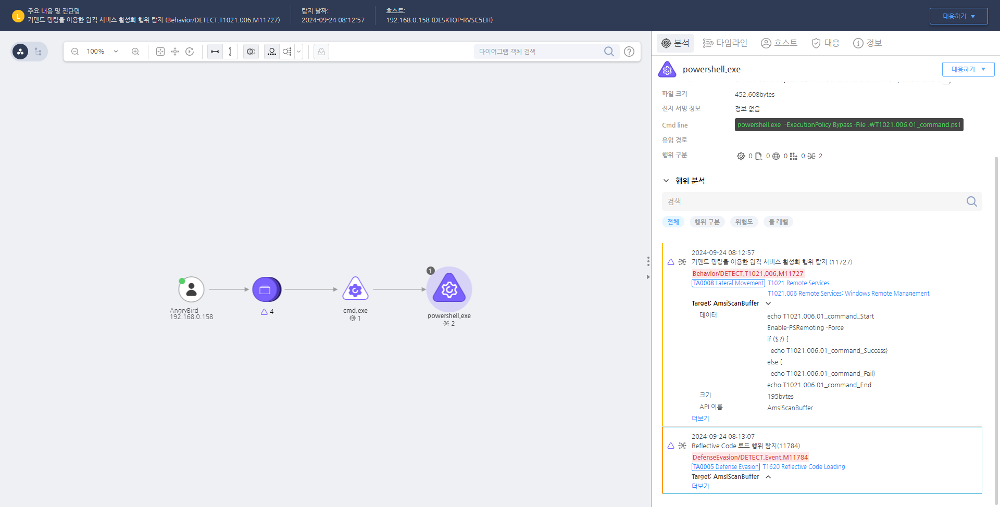

T1021.006.01 원격 서비스 활성화
D3FEND
MITRE ATT&CK 액션을 기준으로 대응 방안을 작성
Detection
Action = "AMSISCAN" AND
CurrentProcess = "powershell.exe" AND
AMSISCAN_DATA = "Enable-PSRemoting -Force"
Detection(EDR)

https://172.18.10.125:8903/#/analysis/alert/66f1f7c6002dc7940000000b
Response
해당 행위를 수행한 프로세스를 종료합니다.
Mitigations
WinRM 비활성화
- WinRM 비활성화: WinRM이 필요하지 않은 경우 Windows 시스템에서 WinRM을 비활성화하여 원격 액세스를 방지합니다.
Set-ItemProperty -Path 'HKLM:\Software\Microsoft\Windows\CurrentVersion\Policies\System' -Name 'DisableWinRM' -Value 1 명령어로 WinRM을 비활성화할 수 있습니다.
- WinRM 서비스 비활성화:
services.msc에서 Windows Remote Management (WinRM) 서비스를 비활성화하거나, PowerShell을 사용하여 시스템 시작 시 자동으로 시작되지 않도록 설정합니다.
Set-Service -Name WinRM -StartupType Disabled 명령을 사용하여 WinRM 서비스를 비활성화합니다.
Windows 방화벽 설정
- WinRM 포트 차단: WinRM 서비스는 기본적으로 TCP 5985(HTTP)와 TCP 5986(HTTPS) 포트를 사용합니다. 방화벽에서 해당 포트를 차단하여 외부 네트워크에서의 접근을 방지합니다.
New-NetFirewallRule -DisplayName "Block WinRM" -Direction Inbound -Protocol TCP -LocalPort 5985,5986 -Action Block 명령으로 WinRM 포트를 차단할 수 있습니다.
강력한 인증 및 암호화
- TLS 암호화 활성화: WinRM 통신을 TLS (Transport Layer Security)로 암호화하여, 전송 중의 데이터가 탈취되지 않도록 보호합니다. 기본적으로 HTTPS 포트를 사용하여 암호화된 통신을 보장할 수 있습니다.
- 강력한 인증 방법 사용: WinRM의 인증 방법을 Kerberos 또는 NTLMv2로 설정하여 약한 인증 방식(예: 기본 인증)을 사용하는 것을 방지합니다.
winrm set winrm/config/client/auth @Basic="false" 명령을 사용하여 기본 인증을 비활성화하고, Kerberos와 NTLMv2만 허용합니다.
다단계 인증 (MFA) 사용
- MFA 적용: WinRM을 사용할 경우, 다단계 인증(MFA)을 적용하여 인증이 더 강력하고 안전하도록 보장합니다. MFA를 통해, 비밀번호 유출 시에도 공격자가 시스템에 접근하는 것을 차단할 수 있습니다.
세분화된 접근 제어
- IP 화이트리스트: WinRM에 접근할 수 있는 IP 주소를 제한하여, 특정 네트워크 내에서만 접근할 수 있도록 설정합니다.
- ACL 설정: Access Control List(ACL)을 설정하여, 특정 사용자나 그룹만 WinRM을 통해 원격으로 관리할 수 있도록 합니다. 불필요한 관리자 계정이나 외부 사용자에게 접근 권한을 부여하지 않도록 합니다.
로그 및 이벤트 모니터링
- 로그 모니터링: WinRM 관련 이벤트(예: Windows Event Logs)를 모니터링하여 비정상적인 로그인 시도나 원격 명령 실행을 탐지합니다. PowerShell Remoting도 함께 모니터링하여 이상 징후를 조기에 감지할 수 있습니다.
- SIEM 시스템 사용: SIEM 시스템을 설정하여 WinRM과 관련된 모든 이벤트를 실시간으로 수집하고 분석하며, 의심스러운 활동을 탐지하고 경고할 수 있습니다.
권한 최소화
- 관리자 권한 최소화: WinRM을 통해 원격 명령을 실행할 수 있는 사용자의 권한을 최소화합니다. 관리자는 필요한 작업에만 WinRM을 사용할 수 있도록 하고, 원격 명령 실행 권한이 불필요한 사용자에게는 이를 제한합니다.
- 최소 권한 원칙: WinRM을 사용할 때 최소 권한 원칙을 적용하여, 사용자에게 주어진 권한이 반드시 필요한 작업만을 수행하도록 제한합니다.
PowerShell 스크립트 및 명령 제한
- PowerShell 실행 정책 설정: PowerShell을 통해 원격 명령 실행을 제한하기 위해 PowerShell 실행 정책을 설정하여, 승인된 스크립트만 실행될 수 있도록 합니다.
- 스크립트 무결성 확인: Windows Defender 및 EDR 솔루션을 사용하여 PowerShell 스크립트의 무결성을 실시간으로 검사하고, 악성 스크립트의 실행을 방지합니다.
정기적인 보안 패치
- 정기적인 보안 업데이트: WinRM 및 관련 시스템에 대한 보안 패치를 정기적으로 적용하여, 알려진 취약점이 악용되지 않도록 합니다.
- 취약점 스캐닝: WinRM 및 시스템의 취약점을 자동화된 취약점 스캔 도구로 점검하여, 취약점이 발견되면 즉시 패치를 적용합니다.
침입 탐지 시스템(IDS) 활용
- IDS 설정: WinRM을 통한 공격을 탐지하기 위해 침입 탐지 시스템(IDS)를 설치하여 비정상적인 원격 명령 실행 또는 파일 전송을 탐지하고 차단합니다.
Affected Techniques
Action 실행시 함꼐 영향을 받는 다른 Techniqes
| D3FEND |
| D3-SCA System Call Analysis |
| D3-PLA Process Lineage Analysis |
| D3-NTA Network Traffic Analysis |